РАЗРАБОТКА
КОНФИГУРАЦИИ
ДЛЯ ОРГАНИЗАЦИИ ХРАНЕНИЯ ИНФОРМАЦИИ О СТУДЕНТАХ
И ИЗУЧАЕМЫХ ИМИ ПРЕДМЕТАХ
Теги: справочник, иерархия групп и элементов,
схема компоновки данных
ЗАДАНИЕ
Заказчик просит разработать конфигурацию для организации хранения информации о студентах и изучаемых ими предметах. Студенты должны быть разделены по группам.
1. Необходимо хранить следующую информацию о каждом студенте:
– ФИО;
– номер телефона в формате +7(999)999-99-99;
– перечень изучаемых предметов.
2. Нужно построить отчет, формирующий список студентов по предметам. А также разработать возможность устанавливать отбор по конкретному предмету.
q
Создать новую информационную базу.
q Открыть информационную базу в режиме «Конфигуратор».
q Открыть окно конфигурации.
Подробнее о том, как это сделать, смотрите в Лабораторной
работе № 2 (стр. 17).
«Заказчик просит разработать конфигурацию для организации хранения информации о студентах и изучаемых ими предметах.»
Данная часть условия говорит нам о том, что в информационной системе
должна храниться информация о студентах и предметах. Для этой цели необходимо
использовать справочник.
Определение
Справочник – это объект конфигурации, который хранит справочную информацию, например, перечень товаров или список сотрудников (более подробно про справочники можно прочитать здесь: https://v8.1c.ru/platforma/spravochniki/).
Добавим справочник «Предметы».
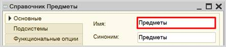
Перейдем в режим «1С:Предприятие» и добавим несколько предметов в справочник.
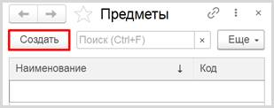
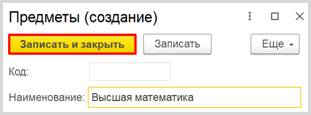
Обратите внимание, что поля «Код» и
«Наименование» система сгенерировала самостоятельно при добавлении
нового справочника. Эти поля являются стандартными реквизитами. Стандартные
реквизиты платформа создает автоматически, исходя из свойств конкретного
объекта конфигурации. Поле «Код» заполнять не нужно, система сделает это
автоматически. Поле «Наименование» является обязательным для заполнения.
Аналогично добавим еще несколько предметов в список.
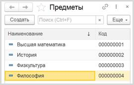
Таким образом, мы
реализовали хранение информации об учебных предметах.
Добавим еще один
справочник – «Студенты».
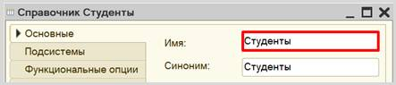
В системе
1С:Предприятие справочники могут быть определенным образом структурированы.
Близкие по смыслу (в том или ином понимании) элементы можно объединять
в одну группу, чтобы не путать их с элементами другого
содержания. В качестве примера можно привести справочник «Номенклатура», в котором могут быть созданы группы «Товары» и «Услуги». Для этого используется иерархия.
У нас есть
необходимость разделить элементы справочника «Студенты» по группам.
Переходим на
вкладку «Иерархия» и
устанавливаем галочку «Иерархический справочник». Выбираем вид иерархии «Иерархия групп и элементов». Данный вид иерархии позволит создавать
отдельно группы элементов и сами элементы.
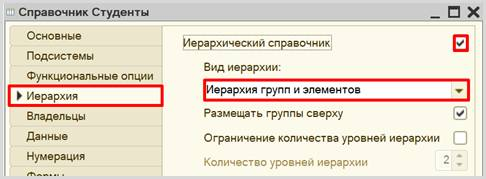
Теперь помимо
элементов справочника мы сможем создавать группы. Группы справочника и будут
группами студентов.
Запустим режим
«1С:Предприятие» и попробуем создать несколько групп студентов.
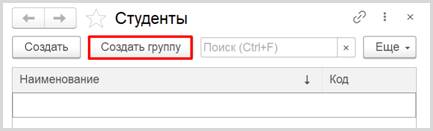
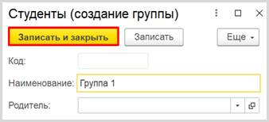
Аналогично создадим
еще одну группу.
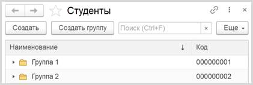
Теперь создадим
студента и добавим его в первую группу, указав ее в поле «Родитель».
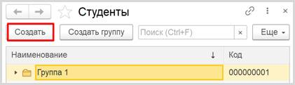
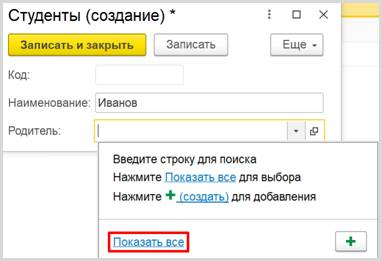
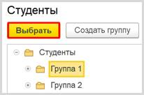
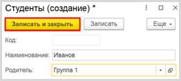
Аналогично добавим
студента «Петров» в группу 2.
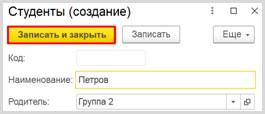
Самостоятельно добавьте
несколько студентов в созданные группы.
Перейдем к
формированию структуры справочника «Студенты». Перейдем на вкладку «Данные». В первую очередь, необходимо изменить длину наименования, поскольку
25 символов на ввод ФИО может не хватить. Увеличим его до 60.
Затем откроем стандартные реквизиты.
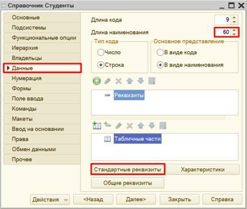
Стандартные реквизиты
платформа создает автоматически, исходя из свойств конкретного объекта
конфигурации. Мы можем добавить синоним для изменения названий данных полей для
пользователя.
Изменим синоним реквизита
«Наименование» на «ФИО».
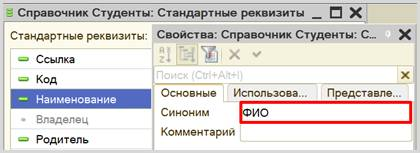
Аналогично изменим синоним реквизита «Родитель» на «Группа».
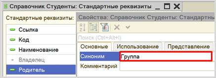
Теперь карточка
студента должна выглядеть следующим образом:
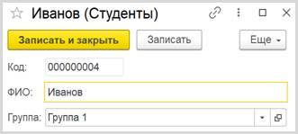
Помимо ФИО и группы карточка должна хранить информацию о номере телефона
студента. Добавим новый реквизит «Телефон» на вкладке «Данные».
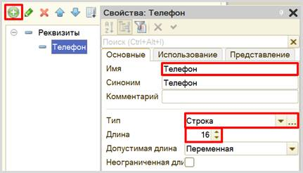
Для фиксирования формата ввода номера телефона воспользуемся свойством «Маска». Маска нужна для ограничения формата ввода
информации. Заполните маску следующим образом:
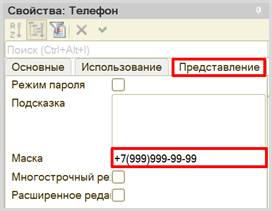
Вместо
символа «9» в режиме «1С:Предприятие» пользователь сможет ввести свои цифры. Теперь
карточка студента позволяет ввести номер телефона по шаблону.
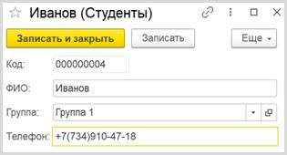
В карточке студента необходимо также отметить изучаемые студентом
предметы.
Конечно, мы можем создать несколько отдельных реквизитов, но может получиться такая
ситуация, что студент изучает большее количество предметов, чем добавлено
реквизитов. Идея с добавлением реквизитов нам не подходит. Поэтому список
предметов логично разместить в табличной части справочника. Добавим новую
табличную часть «СписокПредметов».
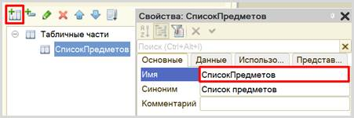
На данный момент
табличная часть совершенно пуста, в нее нельзя будет добавить какие-либо
данные. Чтобы это исправить, нужно добавить реквизит табличной части, которая
представляет собой колонку таблицы.
Добавим реквизит
табличной части «Предмет», тип –
«СправочникСсылка.Предметы». Таким образом, в реквизит «Предмет» может быть занесена
только ссылка на элемент справочника «Предметы».
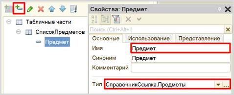
После обновления конфигурации карточка студента будет выглядеть
следующим образом:
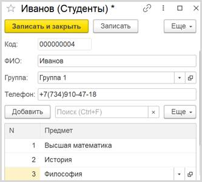
В табличную часть
может быть внесено неограниченное количество строк для каждого элемента
справочника. Таким образом, мы обеспечили хранение перечня изучаемых предметов
для каждого студента.
Самостоятельно
заполните карточки остальных студентов.
Теперь, когда у нас
есть справочник, хранящий информацию о студентах и изучаемых ими предметах, мы
можем создать отчет, формирующий список студентов по предметам.
Для создания отчета воспользуемся соответствующим объектом конфигурации.
Определение
Отчет – это такой объект конфигурации, который формирует данные в понятном для пользователя виде, например, в виде таблицы или диаграммы (подробнее про отчеты можно прочитать здесь: https://v8.1c.ru/platforma/otchet/).
Добавим отчет «СписокСтудентовПоПредметам». Для наполнения отчета воспользуемся конструктором схемы компоновки данных.
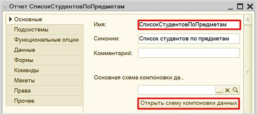
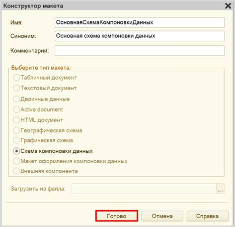
Все созданные нами объекты
конфигурации представляют собой таблицы базы данных. В режиме
«1С:Предприятие» мы заполняем эти таблицы данными. Чтобы получить эти данные
для отображения в отчете, нужно сформировать запрос к базе данных.
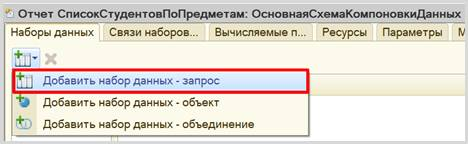
Для составления запроса воспользуемся конструктором запроса.
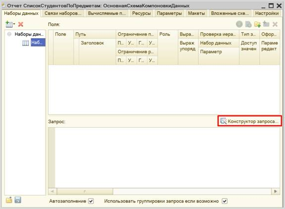
Открывается конструктор запроса. Эта вкладка имеет
три части:
q Часть слева отображает все объекты конфигурации, имеющиеся в нашей базе данных. Необходимо выбрать лишь те объекты, из которых мы хотим получать данные.
q Посередине находятся таблицы – это выбранные нами объекты, откуда мы хотим получать данные для конкретного отчета.
q Справа поля – это те значения (поля), которые мы хотим увидеть в отчете.
Данные будем брать
из табличной части «СписокПредметов» справочника «Студенты».
В результате данное окно
должно выглядеть следующим образом:
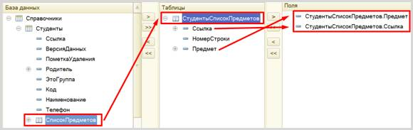
Перейдем на вкладку
«Объединения/Псевдонимы» и
изменим имя реквизита «Ссылка»
на «Студент». Так пользователю
будет проще понять, что отображено в отчете.
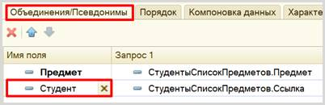
По завершении работы с конструктором
запроса нажмите на кнопку «ОК».
Получившийся запрос должен выглядеть
следующим образом:
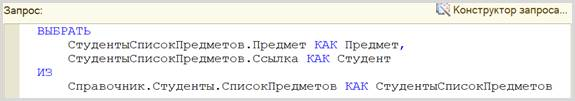
Для настроек отображения отчета перейдем на вкладку «Настройки» и
воспользуемся конструктором настроек
отчета.
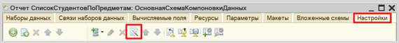
Наш отчет будет иметь вид списка.
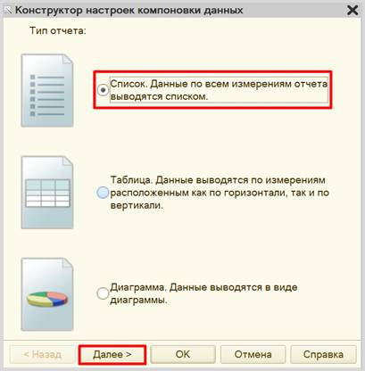
Выберем реквизиты «Студент»
и «Предмет» для отображения в отчете.
Обратите внимание, что в данном окне определяется порядок расположения реквизитов в отчете. Для изменения порядка воспользуйтесь стрелочками справа от выбранных полей.
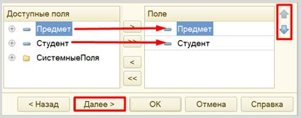
Установим группировку элементов по предметам.
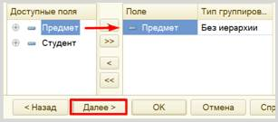
Установим
сортировку. Пусть сначала будут расположены предметы по алфавиту, а внутри
группировки – студенты будут
расположены по алфавиту. Обратите
внимание на порядок реквизитов, измените его с помощью стрелочек при
необходимости.
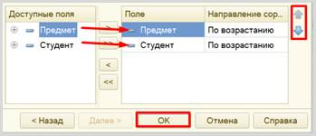
Проверим работу отчета в режиме «1С:Предприятие».
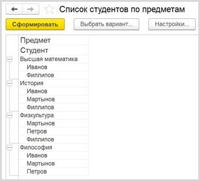
В получившемся отчете
произведена группировка по предметам. В каждой группировке перечислены
студенты, изучающие конкретный предмет.
Предположим, что
нам необходимо получить список студентов, изучающих конкретный предмет. В
текущем варианте отчета придется пролистывать весь список в поисках нужного
предмета. Но можно добавить в отчет отбор по конкретному предмету, который
пользователь может выбрать самостоятельно.
Для этого на
вкладке «Настройки» найдем
вкладку «Отбор» и установим
реквизит «Предмет» для установки
отбора. Откроем свойства элемента и установим галочку, чтобы данный элемент был
доступен для пользователя.
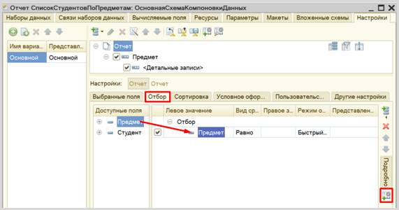
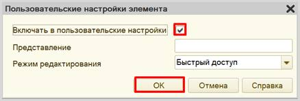
Проверим работу отчета в режиме
«1С:Предприятие». Установим отбор по предмету.
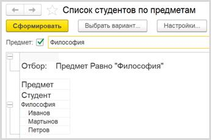
Кстати, вы можете
перейти к карточке конкретного студента, просто щелкнув по нему в отчете
двойным щелчком. Это возможно потому, что в качестве одного из полей для отчета
(на этапе составления запроса к базе данных) мы выбрали поле «Ссылка».
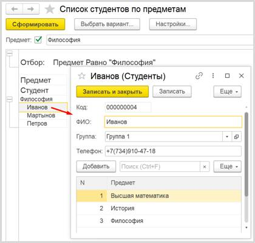